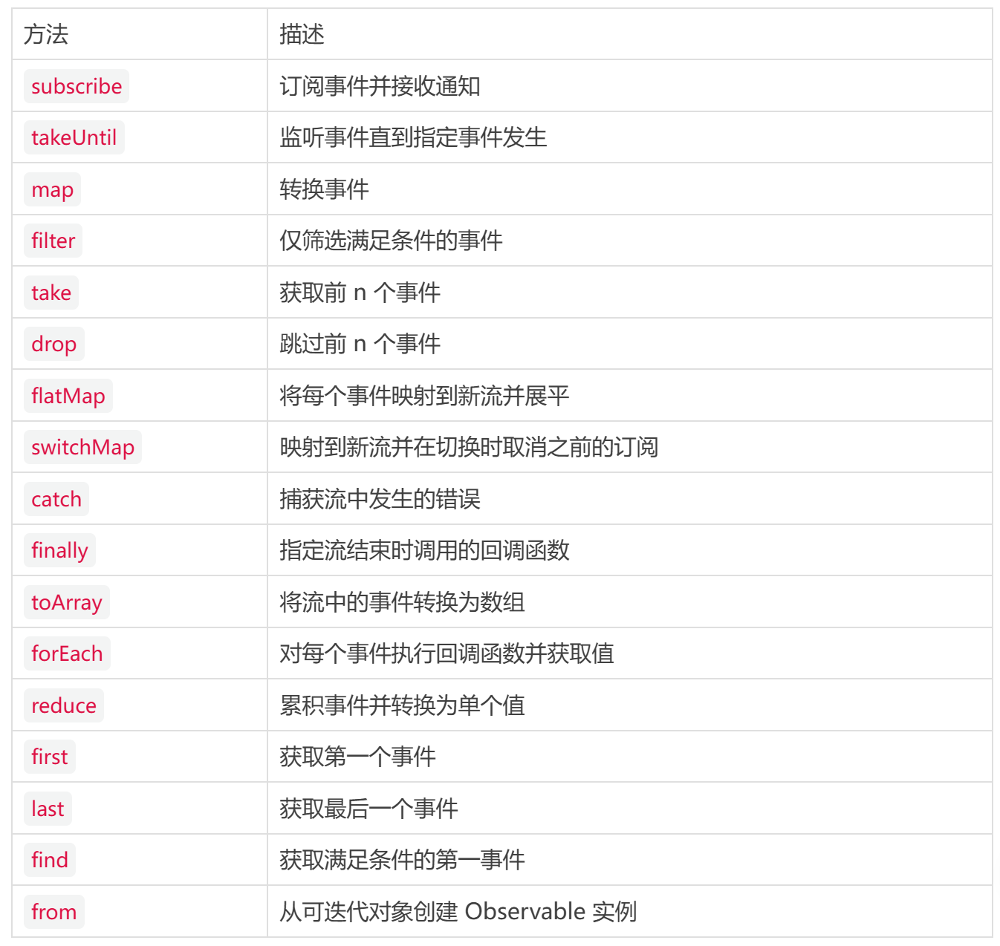

在 Web 开发中，异步事件处理始终是构建响应式、可扩展应用的核心挑战。传统方案依赖addEventListener进行事件监听，但在处理复杂事件流时，其命令式编程模型常导致代码臃肿、难以维护且缺乏组合性。尽管开发者通常通过 RxJS 等响应式编程库解决此类问题，但这些第三方方案需要额外学习成本和包体积负担。
目前，W3C 正积极推动 Observable API 作为浏览器原生标准落地。该提案受响应式编程范式启发，引入声明式的事件处理模型，通过可观察对象和观察者的解耦设计，使开发者能以更函数式的方式组合、转换和操作事件流。
注意：Observable API 是一种实验性功能，目前，仅在 Chrome v135 及以上版本中可用，且需启用“实验性 Web 平台功能”标志。
背景
传统 JavaScript 处理多异步事件时易陷入"回调地狱"，代码呈现深层嵌套结构。RxJS 通过事件流抽象解决了这一问题，提供过滤、映射和组合事件的能力。Observable API 则将此能力直接集成至浏览器，其核心优势包括：
- 声明式组合：通过
map/filter/merge等操作符链式处理事件 - 自动资源管理：内置订阅生命周期管理，避免内存泄漏
- 标准互操作：与 Promise、Async Iterator 等现代异步 API 无缝集成
- 零依赖成本：浏览器原生支持，无需第三方库即可实现高性能事件流处理
使用场景
处理 DOM 事件
传统addEventListener需手动管理订阅和清理，易导致内存泄漏。Observable API 提供声明式监听，自动绑定生命周期。
通过element.when(eventName)监听事件，返回可观察对象，支持链式操作符：
const button = document.getElementById("myButton");
// 监听点击事件
button.when("click").subscribe({
next: (event) => console.log("点击坐标:", event.clientX, event.clientY),
error: (err) => console.error("事件错误:", err),
complete: () => console.log("监听已终止"),
});
// 自动清理：当按钮从DOM移除时，订阅自动取消
优势：
- 自动资源管理：元素被销毁时自动取消订阅，避免内存泄漏。
- 链式操作：可无缝衔接
map/filter等操作符处理事件流。 - 与 Promise 集成：通过
.toPromise()可将事件流转换为 Promise。
带终止条件的事件流
场景：需统计按钮点击次数，直到用户点击“停止”按钮，传统方案需维护状态变量和多个监听器。
使用takeUntil操作符在特定事件触发时终止流，结合reduce聚合结果：
const countButton = document.getElementById("countBtn");
const stopButton = document.getElementById("stopBtn");
countButton
.when("click")
.takeUntil(stopButton.when("click")) // 点击停止按钮时终止流
.reduce((count) => count + 1, 0) // 初始值为0，每次点击+1
.then((total) => console.log(`总点击次数：${total}`))
.catch((err) => console.error("统计失败:", err));
优势：
- 声明式终止：无需手动管理标志位或清除定时器。
- Promise 集成：
.reduce()返回 Promise，可直接处理最终结果。 - 错误处理：通过
catch捕获流中的异常。
事件过滤与转换
场景：仅响应特定子元素的点击事件，并将事件对象转换为坐标数据。
链式使用 filter 和 map 操作符实现：
const container = document.getElementById("container");
container
.when("click")
.filter((e) => e.target.matches(".interactive")) // 仅匹配.interactive元素
.map((e) => ({ x: e.clientX, y: e.clientY })) // 转换为坐标对象
.subscribe({
next: ({ x, y }) => console.log(`有效点击坐标：(${x},${y})`),
});
优势：
- 精准过滤：利用 CSS 选择器语法（
matches）过滤目标元素。 - 数据转换：将原始事件对象映射为业务所需格式。
- 可组合性：可继续链式调用其他操作符（如
debounce）。
WebSocket 数据流处理
场景：实时接收 WebSocket 消息，处理特定类型的数据并在连接关闭时自动清理。
通过 WebSocket 对象的 when("message") 监听消息，结合 takeUntil 监听关闭事件：
const ws = new WebSocket("wss://api.example.com");
ws.when("message")
.takeUntil(ws.when("close")) // 连接关闭时终止流
.map((e) => JSON.parse(e.data)) // 解析JSON数据
.filter((data) => data.type === "update") // 仅处理update类型
.subscribe({
next: (update) => console.log("收到更新:", update),
complete: () => console.log("连接已关闭"),
});
自定义事件流
场景：创建定时计数器，每秒递增并在达到阈值时自动终止。
通过new Observable构造函数定义自定义流，利用setInterval和 subscriber控制流程：
const observable = newObservable((subscriber) => {
let count = 0;
const id = setInterval(() => {
if (count > 10) {
subscriber.complete();
return;
}
if (Math.random() < 0.1) {
subscriber.error(newError("出错了！"));
return;
}
subscriber.next(count++);
subscriber.addTeardown(() => {
console.log("清理！");
clearInterval(id);
});
}, 1000);
});
observable.subscribe({
next: (value) => console.log(`计数: ${value}`),
error: (error) => console.error(error),
complete: () => console.log("完成！"),
});
Observable 实例的方法
Observable 接口提供了多种方法，方便事件流的处理。以下是部分方法的总结：
与 RxJS 的比较
RxJS 是一个全面的反应式编程库，提供广泛的操作符和功能，用于处理异步数据流，其 npm 周下载量高达 5200w+。Observable API 实际上是参考 RxJS 设计的。
- 范围：RxJS 可以处理任何类型的异步数据流，而 Observable API 主要针对
EventTarget对象的事件流，尽管通过new Observable()可以更广泛使用。 - 功能集：Observable API 提供了丰富的操作符，但可能不如 RxJS 全面，后者有更多操作符和更长的开发历史。
因此，Observable API 可能在浏览器事件处理中取代 RxJS 的某些用途，而无法完全取代 RxJS，尤其在复杂场景或跨环境开发中。